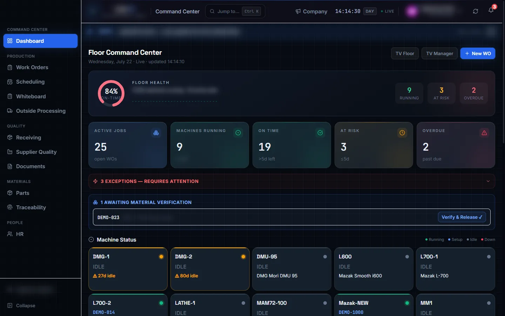
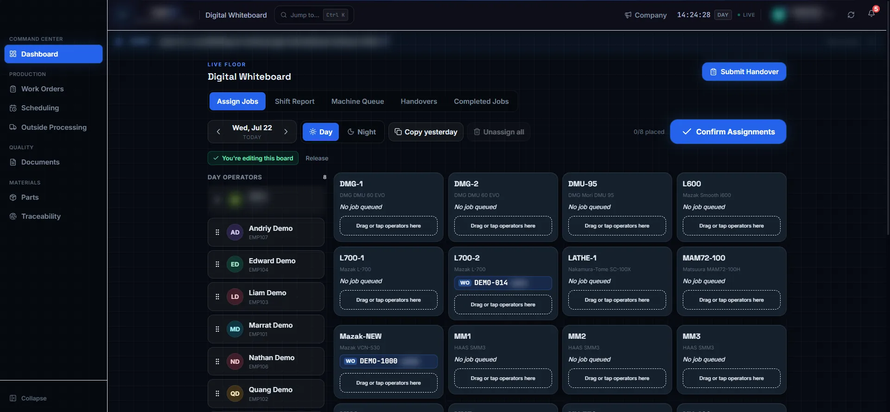
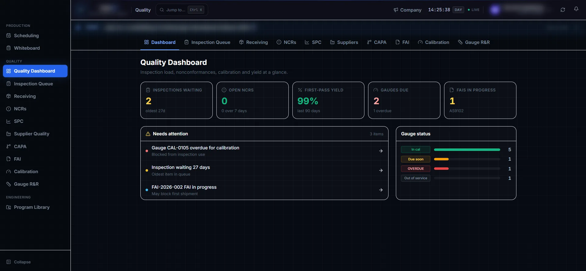
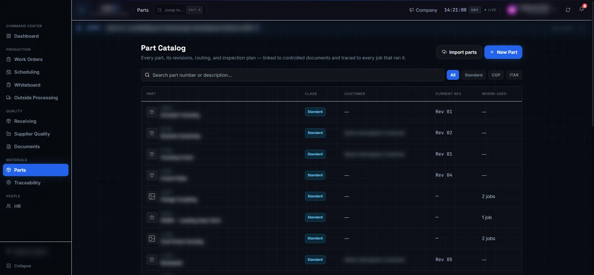
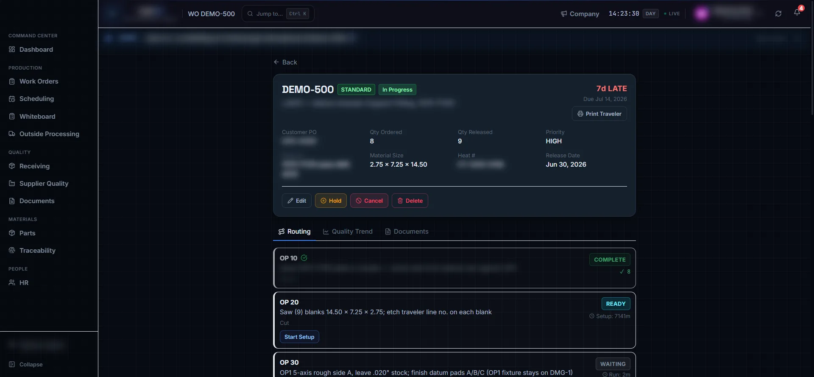

MES · AS9100D · ITAR-READY
The whole shop, meshed into one system.
MESH is a manufacturing execution system for precision machine shops — work orders, live floor tracking, quality records and full traceability, from receiving dock to ship.
DEMO VIEW · DATA REDACTED
New to the term?
What a manufacturing execution system does
An MES is the system of record between the business software and the machines — it runs the shop floor itself.
Jobs come in
Work orders and routings enter the system — imported from your ERP's export or created directly — each carrying its operations, material and due date.
The floor runs on it
Every setup, run and hand-off is tracked live at the station where it happens. Supervisors see the whole floor; operators see exactly their queue.
Every record kept
Inspections, sign-offs and genealogy are captured as work happens — so quality, traceability and audit evidence exist the moment the part ships.
MESH sits at ISA-95 Level 3 — between the ERP above it and the machines below it.
The platform
Built for the floor, the lab and the office
One system, every role — the machinist's kiosk, the inspector's queue, the supervisor's whiteboard and the manager's command center all read from the same truth.
01 · COMMAND CENTER
The whole floor, one screen
Every machine and every job in real time — status, exceptions and due dates. Wall boards mirror the same view across the shop, so the floor and the office are never looking at different numbers.
- Live machine grid with status signals
- Exception-first: late, blocked and due-back jobs surface themselves
- Floor, manager and QC wall boards

02 · THE FLOOR'S HANDS
Assignments and hand-offs, made visible
The supervisor's whiteboard assigns operators to machines shift by shift; station kiosks give every operator a glove-friendly queue where setup, run and complete are one tap each — server-timed and attributed.
- Drag-and-drop crew assignment with a live board lock
- Role-scoped station queues — each station sees only its work
- Shift reports and handovers, written as the shift happens

03 · QUALITY DESK
A QMS that lives with production
NCR, CAPA, FAI, calibration, SPC and receiving inspection run in the same system as the jobs they belong to. Inspection is a gate in the lifecycle — nothing ships unverified.
- Inspection queue gated into the job lifecycle
- First-pass yield, gauge status and NCRs at a glance
- AS9102 FAI and Gauge R&R built in

The full tour
Everything inside
Every module ships in one system — no add-ons, no separate quality silo.
Floor
Floor Command Center
Every machine, every job, in real time.
Digital Whiteboard
Crew assignments, shift report and handover.
Station Kiosks
Glove-friendly, role-scoped queues at every station.
Wall Boards
Floor, manager and QC displays — the same live truth.
Machine Scheduling
Sequence jobs per machine on a digital board.
Outside Processing
Send-outs, due-backs and receiving with cert capture.
Production
Work Orders & Travelers
The job's whole life — routing, quantities, documents, history.
Receiving Inspection
Incoming material verified before it reaches a machine.
OTD · OEE · First-Pass-Yield
Executive KPIs with trend and targets.
Quality
NCR
Nonconformance register and disposition.
CAPA
Corrective and preventive action, tracked to closure.
FAI
AS9102 first-article inspection.
Calibration
Gauge and instrument registry with due-date control.
SPC
Statistical process control on live production data.
Gauge R&R
Measurement system analysis.
Engineering & Records
Program Library
Revision-controlled NC programs.
Setup Sheets
Setup documentation at the point of use.
Tooling
Tool library and where-used.
Parts Catalog
Parts, revisions, routing and inspection plans.
Traceability
Genealogy and heat/lot recall in seconds.
Controlled Documents
Current-rev drawings and work instructions, in-app.
People & System
HR & Training
Employees, training matrix and compliance reports.
Company Board
News and events, from the office to every station.
Admin & Access
Role-based permissions, audit log and system controls.


The traveler, digitized
11 job states, auto-gated from receiving to delivery
The paper traveler that used to ride with every job now lives in the system — each hand-off gated, timed and attributed.
RECEIVED
Material logged, heat & cert on file
SETUP
Program and tooling staged at the machine
RUN
Server-timed, operator-attributed
INSPECT
Gated — nothing ships unverified
SHIP
Full genealogy, recall-ready
One system, twelve roles
Everyone sees exactly their work
Operator
My station queue
Today's jobs, work instructions, one-tap setup → run → complete.
Inspector
The inspection gate
What's waiting, what passed, what needs a disposition.
Programmer
Programs & setups
Revision-controlled programs, setup sheets and tooling.
Supervisor
The whiteboard
Crew on machines, shift report, handover — live.
Management
The command center
OTD, OEE, yield and exceptions across the whole floor.
Quality and compliance, built in
Every record is written once, attributed, and kept — the way an aerospace audit expects to find it. The audit log is hash-chained and append-only: records can be proven intact, not just claimed intact.
Under the hood
Boring where it should be, rigorous where it must be
Frontend
A fast single-page app — kiosks load only the screens they use.
Authorization
Postgres row-level security — access rules live in the database, not the browser.
Execution
A server-side operation state machine — timing and transitions no client can forge.
Audit
Tamper-evident hash chain — every audit record links to the one before it.
Residency
Cloud-hosted with data resident in Canada.
Connected, not entangled
Integrations
ERP inbound
Travelers import straight from your ERP's export — parsed in the browser, nothing leaves the system.
Outside processing
Ship, track and receive every outside job — certs captured, suppliers scored on return.
Controlled documents
Current-rev drawings and instructions viewed in-app at the station.
Proven in production, not in a pitch deck
MESH was built end-to-end for a working AS9100D + ITAR aerospace CNC shop in Ontario, Canada — where it runs the floor across every shift: work orders in, parts tracked, quality recorded, jobs shipped.